今日趋势
共享订单里的要求已经发送，负责提交的助手却还没有读到——Anthropic当天发表的新解读，将这种抢跑列为多人代理协作的具体失败。基础研究较早完成，结论来自模拟环境；它提示的是多位用户、多个目标共用一份资源时，沟通与提交顺序可能比再加一位助手更影响结果。Google的Tabletop则先给人一个共同编辑行程、投票和分账的空间，两件事不能直接互相证明。
Qwen4-Max交付的是截至11月25日的预览入口，Gemini Decision 1交付的是对有限答案的快速判断，本地微调与转换模型又交付另一种控制方式。使用条件与任务类型各不相同。资金端，Torus想把算力带到已有电力余量的场地，另外两家公司分别处理代理测试和医院运营；已有部署、厂商测量与未来扩张计划，仍要分开阅读。
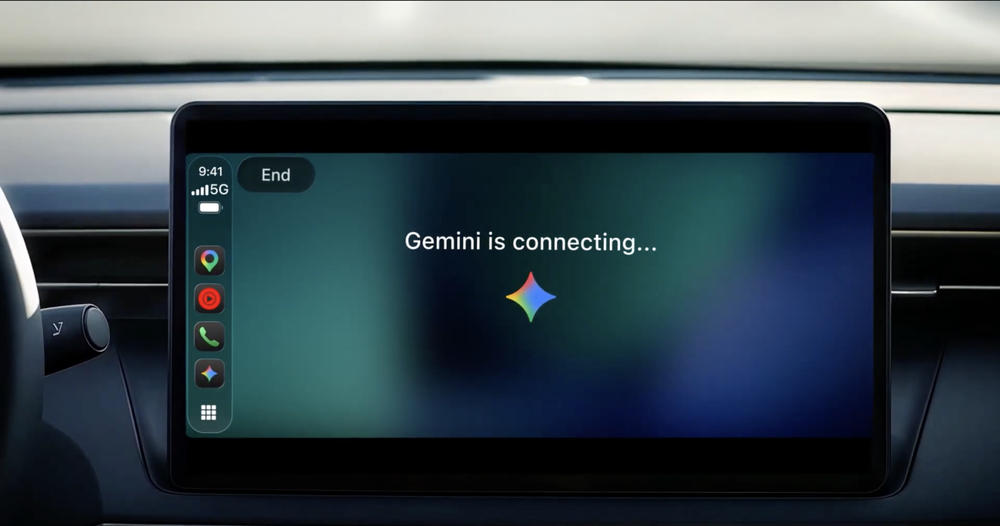
Google本次Gemini CarPlay界面示意
Gemini接入CarPlay语音陪伴驾驶
来源: Google官方CarPlay发布说明 · 2026-11-12 · 原文链接
Google将Gemini应用接入Apple CarPlay，开始向全球支持Gemini Live语言的iOS用户铺开。更新iPhone上的Gemini、允许麦克风并至少在手机上使用一次Live后，可在车载屏幕启动或继续对话，讨论日历、邮件与想法，记录同步回手机。Daily Brief须先启用，部分个性化能力不向未满18岁用户、欧洲经济区或尼日利亚提供。语音免手持不代表没有认知分心，公告也未证明长对话能提升驾驶安全。
Janet 锐评：
路上冒出的想法可以停车后接着整理，聊天记录同步比当场说完就忘更实际。但能插话、能随时暂停同样重要；一句“免手持”不会自动腾出驾驶者的注意力。
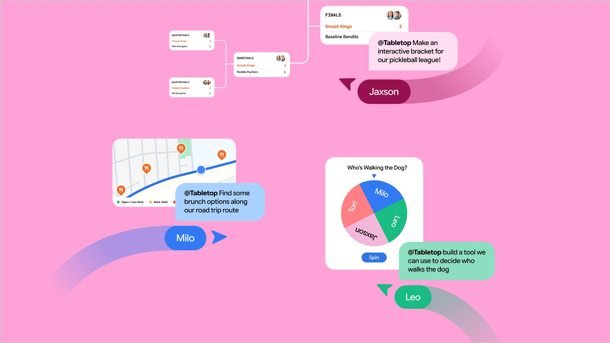
Google Tabletop本次群组空间演示
Google开放Tabletop群组协作候补
来源: Google Labs官方实验公告 · 2026-11-12 · 原文链接
Google Labs推出Tabletop实验，让群组上传链接、文件与想法，通过提示或模板生成可交互的行程、聚餐投票、费用分摊表和比赛对阵。创建空间后可分享邀请链接，多人像共同编辑文档一样同时使用。当前通过候补名单向美国18岁以上用户逐步开放，尚非全球普遍可用。它是供人共同规划和编辑的实验空间，不能由此假定多位自主代理已经能够可靠地替所有成员达成共识。
Janet 锐评：
旅行讨论最容易散落在群聊、表格和地图之间，一个能共同修改的地方，确实比大家各自收到一篇漂亮攻略更接近问题。Tabletop有意思的地方在于生成后还能一起使用。行程表出现了，不等于预算和偏好已经谈妥；谁确认最后版本、谁能改别人填的内容，仍然影响群体体验。候补名单也提醒人，这是一项正在试验的协作产品，眼下的演示不能替后续实际使用作保证。
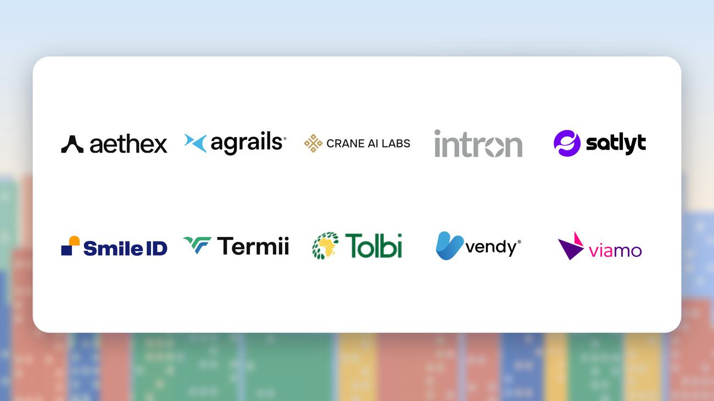
Google本次十家非洲入选团队名单图
Google为十家非洲团队开放AI实验室
来源: Google Africa官方首届团队公告 · 2026-11-12 · 原文链接
Google公布首届Africa Applied AI Lab的十家入选团队，涵盖识别非洲口音的Intron、在廉价手机离线运行的Crane AI Labs、结合卫星资料与语音农业指导的Tolbi，以及以普通电话提供本地语言服务的Viamo等。团队将获得Gemini、Gemma等模型接入和工程指导，并与创投伙伴交流，计划十二月在阿克拉展示成果。入选与辅导不是已披露的统一融资额度，也不等于项目效果均获独立验证。
Janet 锐评：
不是每个用户都拿着新手机、用稳定网络说标准英语。口音、离线运行和普通电话这些条件，决定了工具能否真的抵达使用者；它们比换一个更大的模型名字更贴近产品的第一道门槛。
OpenAI本次退伍军人支持计划进展配图
OpenAI公开两万退伍人员获赠Plus进展
来源: OpenAI官方计划进展报告 · 2026-11-12 · 原文链接
OpenAI公布既有美国军人转业与退伍军人支持计划的新进展：过去一年逾两万人领取一年免费ChatGPT Plus，社区伙伴已为近千人举行十余场培训，年内另有后续活动。文章介绍整理履历、练习面试和写作的个人经历，领取仍须符合身份与服务资格。这是当天新披露的里程碑，计划基础事件较早；领取人数与个别就业案例不能证明普遍提高了录用率或收入。
Janet 锐评：
多年经历怎样写进另一种行业的简历，本来就需要一次翻译。工具可以陪人练习表达，培训也能降低第一次使用的门槛；领到会员的人数，却回答不了最后多少人找到了合适的工作。
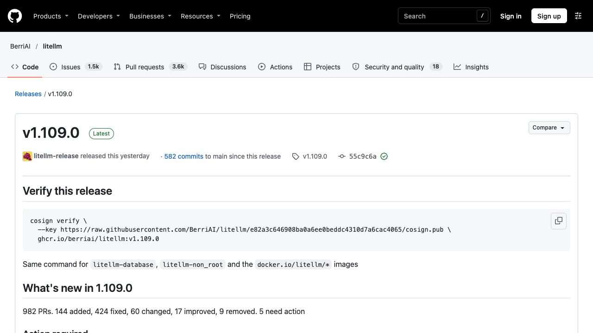
LiteLLM v1.109.0原始版本说明截图
LiteLLM支持断流续接并调整迁移项
来源: LiteLLM官方v1.109.0 Release · 2026-11-12 · 原文链接
LiteLLM发布v1.109.0，加入流式回答中途断开后的备用模型续接，以及关闭工具自身主动联网获取行为的离线模式。版本同时列出迁移事项：备用目标改为模型列表、移除disk缓存后端、严格每分钟请求上限须显式开启对应检查等。续接依赖既有备用配置，不能保证跨模型内容始终一致；离线模式也不是让本来依赖外部模型的应用自动具备本地推理能力。
Janet 锐评：
回答说到一半掉线，续得上当然省心。接棒的模型仍可能换一种判断，界面连起来不代表内容天然一致。迁移项里那些缓存与限流的小字，反而可能先决定服务能不能照常运行。
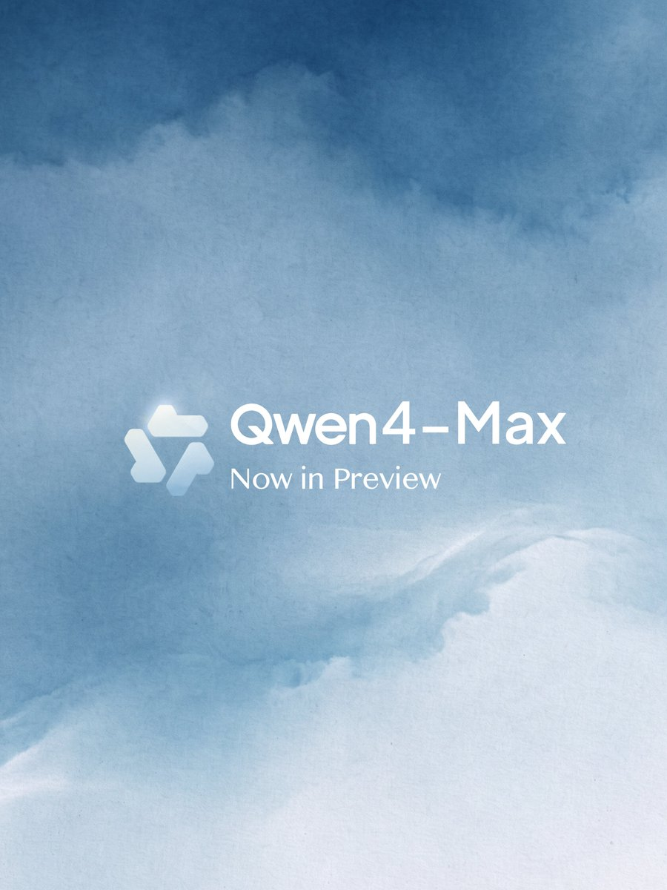
Qwen官方Qwen4-Max Now in Preview发布海报
Qwen4Max开放有期限的付费预览
来源: Qwen官方发布帖及QwenCloud模型与订阅文档 · 2026-11-12 · 原文链接
阿里Qwen宣布Qwen4-Max预览，官方QwenCloud文档列出模型名qwen4-max-preview及别名qwen4.0-max-preview，仅通过Token Plan调用，不支持按量付费。模型接受文字、图像与视频，支持一百万tokens上下文，推理与回答合计输出上限393,216 tokens。预览从11月11日10时至11月25日24时，时区UTC+8，期间保持版本不变，结束后退役。性能提升属于厂商说明，本次公告未给出可核对的完整参数量、独立评测或Qwen4全系列开放权重安排。
Janet 锐评：
一个有截止日期的预览，更适合用来比较真实任务，不适合悄悄变成长期依赖。固定两周内不改版本，有利于把差异看清楚；退役日期又意味着试出来的工作流还得准备下一步。百万上下文能放进更多材料，材料有没有用对仍是另一张成绩单。对已经订阅Token Plan的人，入口确实具体；对等待权重的人，今天拿到的仍是服务，而非一个可下载的Qwen4底座。
Google本次Gemini Decisions API发布示意图
Gemini用决策模型一次评估千个问题
来源: Google DeepMind官方Decisions API公告 · 2026-11-12 · 原文链接
Google推出Gemini Decision 1与Decisions API，针对是非、多选及量表评分等有限答案任务。一次请求可共享文字、图像、音频、视频或PDF输入，最多评估一千个独立问题，上下文最高256K；每百万输入tokens0.10美元，不收输出token费用。厂商披露的150至250毫秒端到端延迟对应特定测试，近乎平坦的延迟观察限于最多100题、16K输入等条件，不能推广至一千题长上下文。结果给出概率与置信度，仍可能判断错误。
Janet 锐评：
很多后台环节只想知道该走哪条路，并不需要模型再写一段说明。有限选项能减少输出与解析负担；选项列错、漏掉“无法判断”，再快的概率也只是替一个有缺口的问题作答。
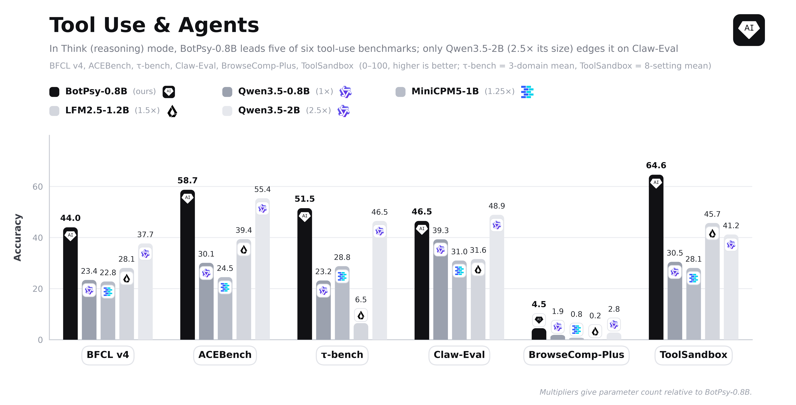
QVAC BotPsy本次工具能力评测原图，作者自报
QVAC发布八亿参数工具模型新报告
来源: QVAC官方新报告及模型卡 · 2026-11-12 · 原文链接
Tether AI Research旗下QVAC发表BotPsy报告，介绍基于Qwen3.5-0.8B独立微调的八亿参数工具调用模型，经过监督训练、蒸馏和强化学习，面向低至中等难度的本地助手任务。仓库提供BF16权重并指向GGUF版本，标注Apache 2.0；这是当天新报告，仓库较早创建，不是Qwen官方新基础模型。作者自报BFCL v4从底座23.4提高到44.0，但开放式搜索、多轮累积指令及低资源语言仍有明显弱点，不适合据此承担高风险决策。
Janet 锐评：
八亿参数最有吸引力的用法，是在本地完成范围清楚的小动作。作者没有藏起搜索成绩仍低、指令累积后会退步这些短处；知道它何时容易失手，比一句“同尺寸最佳”更方便安排实际工作。
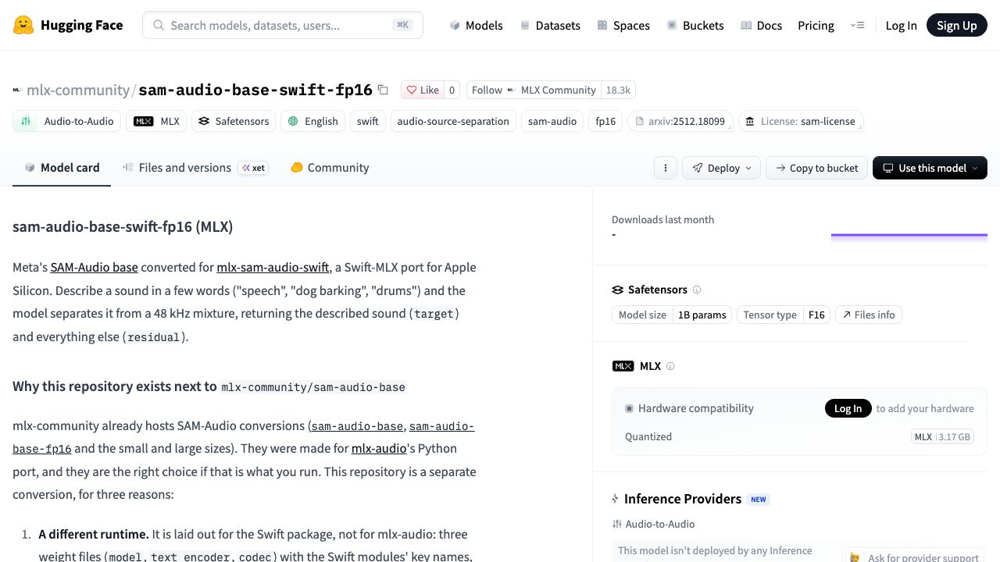
SAM-Audio Swift独立转换版原始模型卡截图
社区转换SAM音频模型接入Swift
来源: MLX社区当天转换仓库与模型卡 · 2026-11-12 · 原文链接
MLX社区新增sam-audio-base-swift-fp16，独立转换Meta既有SAM-Audio base供Apple芯片上的Swift运行，并非Meta新基础模型发布。它接受文字和时间段提示，从混合录音生成目标声与其余声音，保留AudioSeal水印及原SAM许可。转换者说明该包与Python版文件布局不同，不能互换；当前输出单声道，一次约十秒，不含视觉提示或重排序。作者在M5 Max上的速度与分离测试属于特定样本自报，吉他类声部仍表现较弱。
Janet 锐评：
同叫MLX转换，文件能否被当前程序读进去仍有区别。保留水印和被旧转换漏掉的计算项，也说明搬运权重并非只换一个后缀；剪辑者最关心的，终究是分离后有没有留下可用的声音。
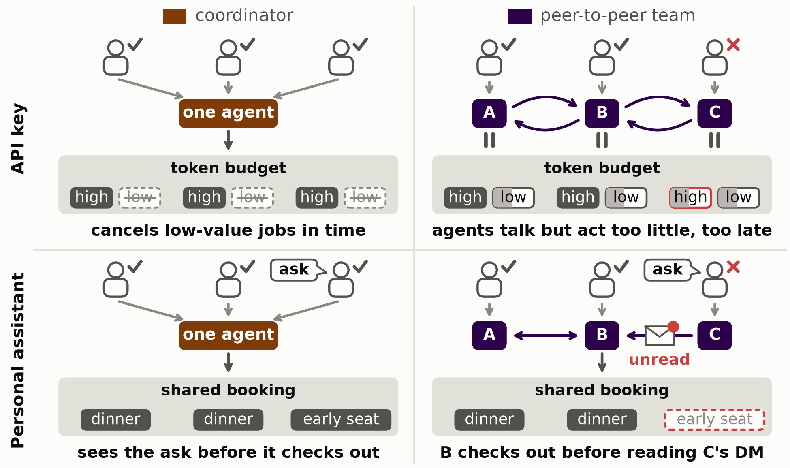
Anthropic原文共享预算与群组助手对照示意图
Anthropic发现多助手共享任务表现下降
来源: Anthropic Alignment Science当天研究解读与原始论文 · 2026-11-12 · 原文链接
Anthropic对齐科学博客发表Worse Together新解读，基础论文9月30日已提交、代码也较早公开。研究在共享预算、诊所日程、群组订单和代码合并队列等模拟环境比较协调方式，以两款Claude为例，单一协调者在四类任务中的群体结果都优于每人各派一个助手。部分订单提交时仍有未读要求。针对失败订单的重跑中，强制先读完待处理消息再提交，分别挽回Opus与Sonnet约73%和62%的失败样本；设领队则未在所有环境奏效。结果不等于所有真实多代理系统都更差。
Janet 锐评：
“消息发过去了”与“提交的人已经读到”，中间隔着一个很实在的空隙。多人点餐里的过敏要求、共享预算里的先后次序，都可能卡在这里。实验还提醒了另一件事：群体总分更高，也可能靠取消别人的任务换来；结果和是否征得同意，值得分开看。领队能救一种场景，未读消息闸门能救另一种，协作问题没有一个加上去就通用的总开关。
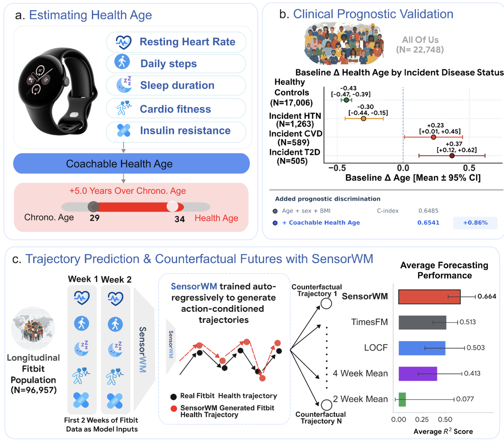
Google本次健康年龄与SensorWM研究框架原图
Google用手表数据模拟十二周健康习惯
来源: Google Research官方研究解读 · 2026-11-12 · 原文链接
Google Research介绍研究性健康年龄与SensorWM框架，结合手表的静息心率、步数、睡眠和活动等资料，模拟改变习惯后的十二周生理轨迹。世界模型使用约十万名同意参与的Fitbit用户、228万人周去标识数据，可进一步结合常规血液指标分析心肾代谢健康。专家偏好与安全评分来自离线回顾性评估，并非前瞻性临床试验。这是当天新研究解读，模型仍是研究原型，不能将预测的健康年龄下降当作已证实的治疗效果。
Janet 锐评：
手表很会告诉人昨天走了多少步，难的是把记录变成一个能坚持的计划。模拟不同习惯有助于提出具体选项，却没有替任何人的身体走过那十二周；专家认为计划合理，与长期效果已经发生，是两份不同的证据。
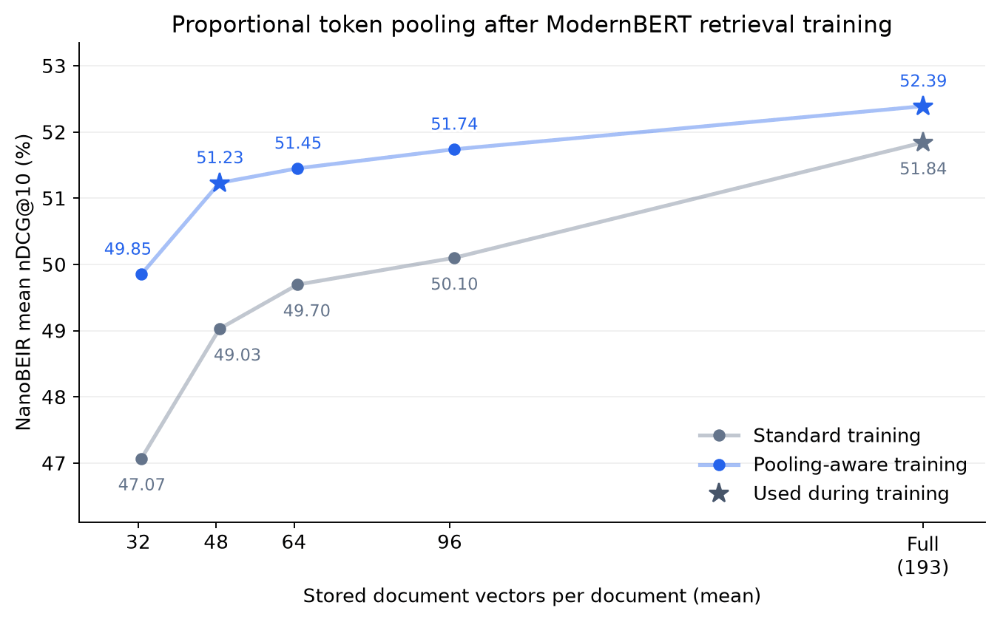
Hugging Face本次检索质量与向量预算实验原图
新训练用四分之一向量保留检索效果
来源: Hugging Face官方训练指南与发布提交 · 2026-11-12 · 原文链接
Hugging Face发布token pooling训练指南，介绍合并相近词元向量，并在训练中同时优化完整与压缩表示。作者以同批十二万条MS MARCO三元组训练，在NanoBEIR@13评估中，约减少74.8%的文档向量后，压缩感知训练的nDCG@10为51.23，普通训练同压缩条件为49.03。前者保留其自身未压缩成绩的97.8%，不是97.8%的任务准确率。示例只使用特定初始化、种子和语料，换知识库仍须重新检查质量与索引成本。
Janet 锐评：
检索库越大，每份文档多存几十个向量都会累积成成本。这里节省的是表示的数量，并尝试少丢掉有用区别。把保留率的分母写清楚，才能知道省空间之后，究竟留下了多少检索能力。
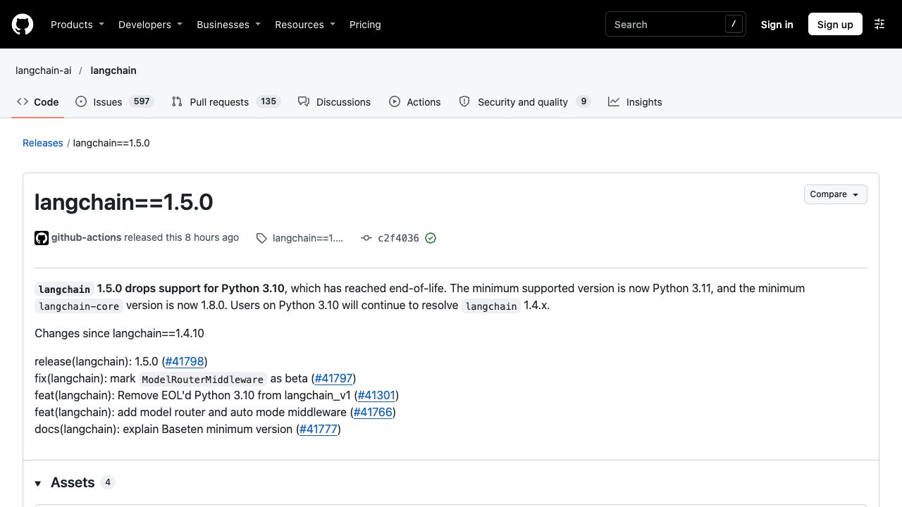
LangChain 1.5.0原始版本说明截图
LangChain加入测试版模型路由
来源: LangChain官方1.5.0 Release及合并说明 · 2026-11-12 · 原文链接
LangChain 1.5.0将模型路由与自动模式中间件纳入主包，ModelRouterMiddleware明确标为beta。对应实现要求调用方提供BaseDecisionModel分类器，不再默认选择供应商，原TypeSafe子类保留兼容路径。版本最低支持Python 3.11及langchain-core 1.8.0，Python 3.10环境继续解析到1.4系列。新增的是应用判定和路由接口，不是自动获得所有模型的访问资格，也不能据此保证更低费用或把分类结果视为用户授权。
Janet 锐评：
把一次请求送到哪种模型，越来越像应用自己的日常调度。框架提供接点，却不能替团队选择供应商和失败时的去处；会选模型，与能替用户批准一次外部操作，仍是不同的决定。
投资与商业
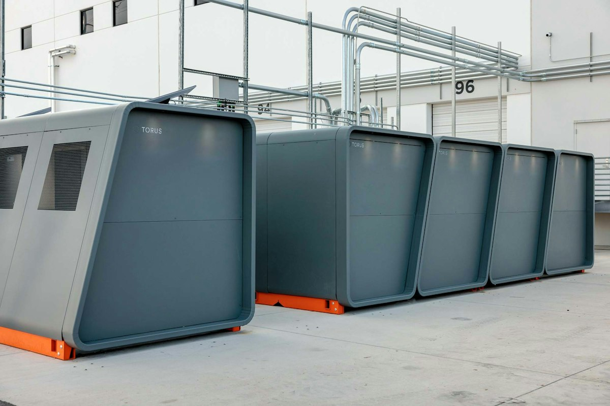
Torus本次Foundry模块化计算设施原图
Torus融资五亿美元建设模块化算力
来源: Torus官方Foundry发布与融资公告 · 2026-11-12 · 原文链接
Torus宣布Magnetar领投的五亿美元增长资本，并推出Foundry模块化AI基础设施，将供电、储能、制冷、网络与计算整合到预制系统，面向已有电力余量的场地。官方称单站一至二十MW，从签约到运行负载约十二至十六周，并提供不含GPU外壳、整机及专属推理容量等不同模式。公司称已有数千GPU部署，2027年底逾四万七千GPU是计划。增长资本的具体股债结构未在公告中完整拆分，部署速度、产能和节水数据均为公司自报。
Janet 锐评：
机房等电，可能比等芯片更久。把设备带到已有电力余量的地方，是一种具体的建设选择；它并没有让每座厂房突然多出一条可用的供电线路。十二至十六周也比“几天装好”更接近合同到真正开工之间的全程。五亿美元要放大的是制造、场地接入与持续运维，预制箱体做出来，只完成其中一段；未来GPU计划仍要等实际部署逐步兑现。
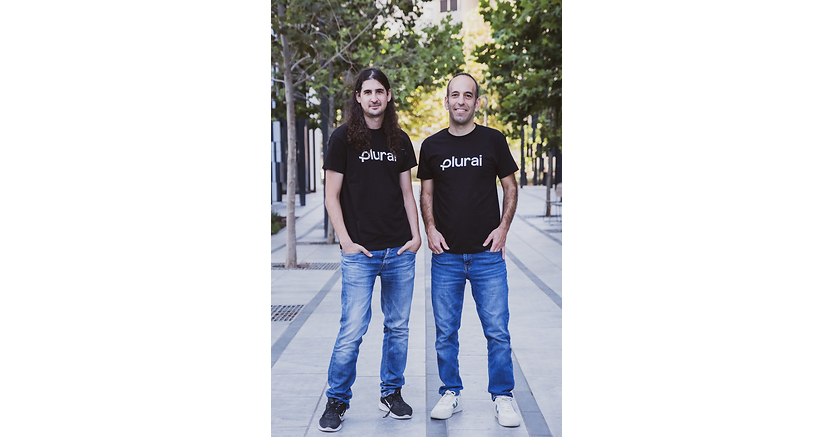
Plurai本次融资创始人合影，摄影Guy Hamoy
Plurai融资千万美元模拟代理故障
来源: Plurai经PR Newswire发布的融资与开放公告 · 2026-11-12 · 原文链接
Plurai宣布一千三百万美元种子轮，Team8领投，U&I、Velocity及Mercer参与，同时向开发者普遍开放代理模拟平台并提供免费起步层。它根据客户知识库、工具和规则建立模拟环境，用大量正常与对抗场景查错，再训练专用小模型执行或持续检查任务。公司自报伙伴样本中失败减少82%、成本降低97%；与NVIDIA、Nebius相关的低成本案例也限于特定企业工作负载，不能外推为小模型全面超过前沿模型。
Janet 锐评：
在真实客户到来前反复演练坏情况，有明确的付费理由。模拟环境能否像实际业务一样复杂，才决定测试的含金量；降低成本与少出事故都是好结果，漂亮百分比却还不能替别家的任务预支同样的收益。
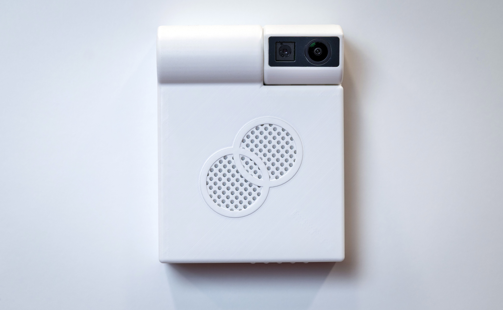
Akara本次融资公告配图：临床空间热感应传感器
Akara融资550万美元扩医院传感器
来源: Akara经GlobeNewswire发布的融资公告 · 2026-11-12 · 原文链接
Akara宣布五百五十万美元融资，累计融资一千二百三十万美元，Locke Health领投，VTC Ventures、EIC Fund、CommonKind等参与。公司用墙面热感应与端侧AI识别临床空间活动，不采集患者或员工的细致视觉影像，再通知人员、生成运营报告，称已在美国医院及门诊手术中心部署。资金将扩展工程、运营和医疗代理应用。减少详细影像与传输是设计取舍，不等于数据完全无敏感性，也未由融资证明患者治疗结果改善。
Janet 锐评：
医院里的等待有时来自房间状态、清洁与人员之间的信息没接上。少拍细节、在设备上处理，是比事后承诺保密更靠前的一步；但谁能看活动记录、记录保存多久，仍关系到患者和员工的真实感受。